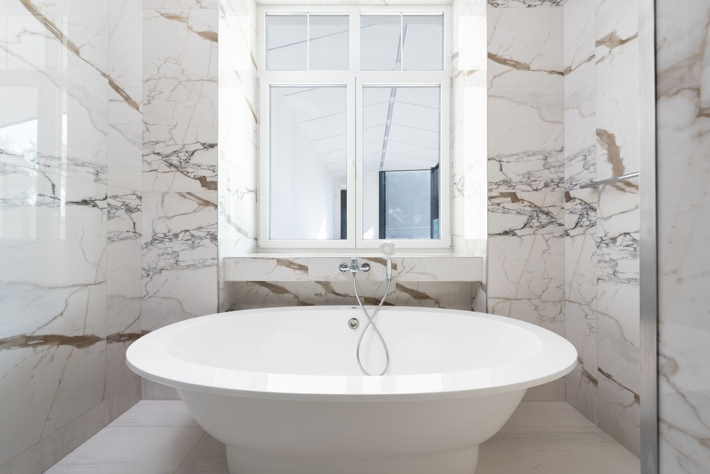

Zakres robót

Awarie i przecieki
Woda leje się tam, gdzie nie powinna? Zakręć główny zawór i dzwoń. Przyjeżdżam z narzędziami i częściami na większość przypadków, znajduję przyczynę i naprawiam to, co faktycznie puściło - nie zaklejam objawów. Zanim wyjdę, sprawdzam, czy jest sucho. Dopiero wtedy koniec roboty.

Udrażnianie rur i kanalizacji
Zatkany zlew, brodzik albo WC to zwykle robota na jedną wizytę. Sprawdzam, gdzie siedzi zator, i dobieram narzędzie do rury, a nie odwrotnie - czasem wystarczy rozebrać i wyczyścić syfon. Jak zator wraca co miesiąc, szukam przyczyny głębiej, zamiast przepychać w kółko.

Wymiana i montaż kotłów
Stary kocioł bierze coraz więcej gazu albo wysiada w największy mróz? Wymieniam kotły na kondensacyjne i podłączam je tak, żeby odbiór przeszedł bez poprawek. Doradzę model, który ma sens przy Twoim metrażu - a nie ten, na którym najwięcej się zarabia.

Instalacje wod-kan
Budujesz dom albo robisz generalny remont? Rozprowadzam wodę i kanalizację od podstaw: podejścia, piony i próba szczelności pod ciśnieniem, zanim cokolwiek zniknie pod płytkami. Z ekipą wykończeniową dogaduję się sam, żeby glazurnik nie czekał na hydraulika. Ty dostajesz instalację, o której zapomnisz na lata.

Montaż łazienek
Płytki położone i łazienka czeka na finał? Podłączam wannę, kabinę, umywalkę, WC, baterie i pralkę - wszystko wypoziomowane, uszczelnione i sprawdzone pod ciśnieniem, zanim oddam robotę. Silikon kładę równo i bez fal, bo to na niego patrzysz potem latami. Wchodzisz i korzystasz.

Centralne ogrzewanie i grzejniki
Rozprowadzam centralne ogrzewanie w nowych domach i wymieniam stare piony w remontowanych. Grzejniki dobieram do kubatury pomieszczenia z tabel, nie z przyzwyczajenia - za mały nie dogrzeje, za duży przepali. Na koniec równoważę instalację, żeby ostatni grzejnik na pionie grzał tak samo jak pierwszy.
Która z usług Cię interesuje?
Napisz, co chcesz zrobić - odpowiemy z propozycją i wyceną.